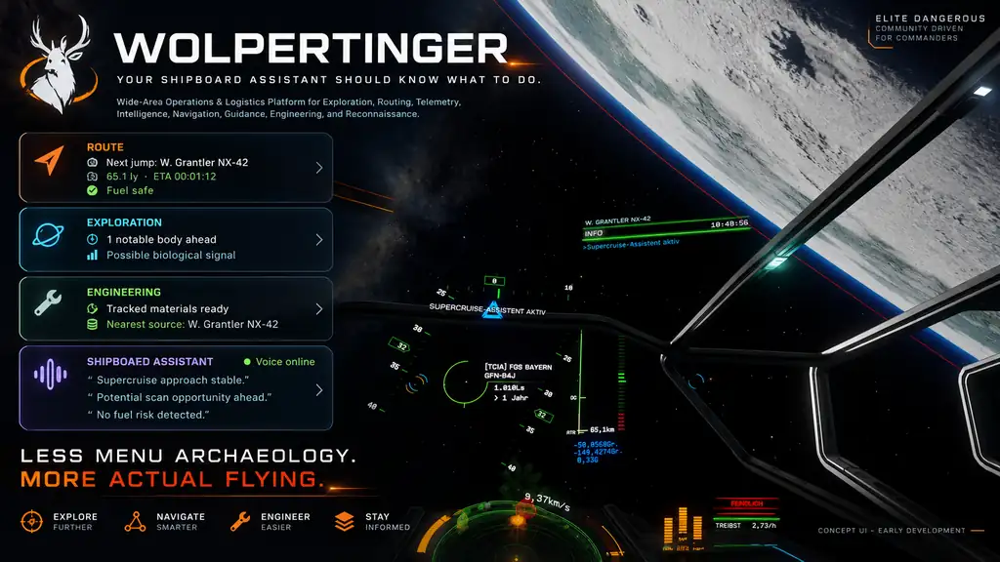

01Foundation · implemented
Trusted game state
Journal-derived evidence, deterministic normalization, trusted state, reproducible projections and exact replay form the established core.
Elite Dangerous · Independent community project
PRE-ALPHA NO SUPPORTED RELEASE
WOLPERTINGER is a local-first companion in development. Its goal is to turn trusted game observations into useful context for a commander's next decision.
The deterministic journal and trusted-state foundation exists today. The commander-facing tray, overlay and hub are still being built.

Actual state, not a feature promise
WOLPERTINGER is research-stage software. The technical core and the user-facing experience are at different levels of maturity.
Journal-derived evidence, deterministic normalization, trusted state, reproducible projections and exact replay form the established core.
Typed presentation data and local transport exist. Tray, overlay and hub experience, reconnection and recovery still need work.
Exploration, navigation, engineering and logistics are possible future directions—not features claimed as available today.
Design boundary
The companion is designed around evidence from the game. Optional AI providers and external services must not become authoritative sources of game state.